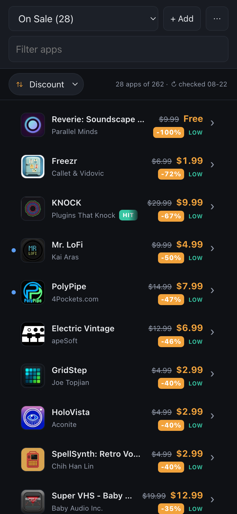
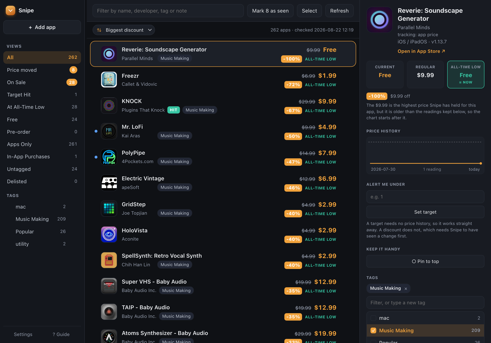

Know the moment a price drops.
Snipe watches the App Store apps you actually want and tells you when one goes on sale — what it cost before, what it costs now, and whether it has ever been cheaper than this.
In development. No account, no subscription, no tracking.
Every screenshot here is a real watchlist, not a mockup.

Apple never says what an app usually costs.
The App Store publishes today's price and nothing else. There is no "was" field, no sale flag, no history — which is why a discount is so easy to miss. Snipe solves that the only honest way: by watching, and remembering.
Add what you want
Paste an App Store link, search by name, or share straight from the App Store app. Mac, iPhone and iPad apps all count.
Snipe keeps checking
It re-checks on its own schedule and records every price it sees. The highest price it has ever observed becomes the regular price.
You get the drop
When today's price falls below that baseline, it's a sale — with the real percentage, and a flag if it's the lowest ever recorded.
Built for a wishlist that got out of hand.
Name your price
Set the number you'd actually pay. Snipe notifies you when an app crosses it — no history required, so it works the day you add something.
Know if it gets better
A sale isn't always a good one. Snipe marks the price it has never seen beaten, so you know whether to buy or keep waiting.
Nested, not a flat pile
File apps under music/synths or work/design, then filter to a branch. Select many at once to tag them in a single pass.
Track the unlock, not the app
A free app with a paid unlock can never "go on sale" by Apple's numbers. Snipe can watch the purchase itself instead.
One list, every device
Your watchlist syncs through your own iCloud account. Add on the Mac, see it on the phone.
Notice when apps vanish
Apps get pulled from the store. Snipe tells you instead of quietly showing a stale price forever.
A real Mac app, and a real iPad one.
Rail, list and detail — the full three-column layout on iPad and Mac, collapsing to a single clean list on iPhone.

Snipe on iPad. The same layout runs on macOS.
That’s a real watchlist.
Every screenshot on this page is Snipe’s real interface showing my own list: 262 apps, real names, real prices, straight from the App Store. Nothing here is a mockup and no numbers were invented for the page.
It leans hard on music apps because that is what I hoard — which is rather the point. I built Snipe because my own wishlist got long enough that I kept missing sales on it. Yours will look like whatever you collect.
There is no server to trust.
Snipe talks to Apple to look up prices, and to your iCloud to sync. That's the whole list of things it talks to.
- No accountThere's nothing to sign up for.
- No analyticsYour watchlist isn't sent anywhere or measured.
- Your iCloud, not oursSync runs through your private database.
- Yours to readThe watchlist is a plain JSON file on your Mac.